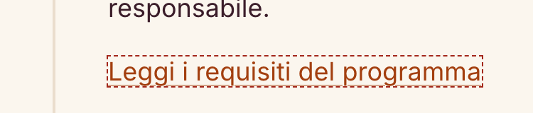
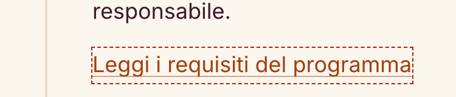

1Introduzione
Con questa relazione documentiamo come abbiamo verificato e migliorato l'accessibilità di ideaBlume, il prototipo di crowdfunding per la ricerca realizzato nell'Assignment 2: 25 pagine in italiano e 25 equivalenti in inglese, che condividono header, footer, fogli di stile, JavaScript e testi tradotti.
Abbiamo lavorato in due cicli di analisi, correzione e nuova verifica. Il Ciclo 1 (5 novembre) è partito dalla versione consegnata con l'Assignment 2 («prima»): MAUVE++ su tutte le pagine pubblicate e la nostra suite locale(html linter). Nel Ciclo 2 (9 novembre) abbiamo ripetuto l'audit online su tutte le 50 pagine con due servizi (MAUVE++ e ACHECKS), raggruppato le segnalazioni per causa e corretto quelle confermate, una alla volta. La versione finale è quella dell'Assignment 3 («dopo»).
2Strumenti e impostazioni
Lo strumento principale è MAUVE++, come richiesto dalla consegna. Abbiamo confrontato i suoi risultati con un secondo servizio online (ACHECKS) e con controlli manuali.
| Strumento | Configurazione | Copertura | Ciclo | Scopo e limiti |
|---|---|---|---|---|
| MAUVE++ 4.0.2 | WCAG 2.1 AA, pagina singola, desktop/Windows/Chrome | 50/50 URL pubblicati, in entrambi i cicli | 1 2 | Strumento principale. Analizza HTML e CSS: non sempre risolve variabili CSS, sfondi trasparenti e color-mix; non esegue la ricerca, quindi su cerca.html valuta solo lo stato iniziale. |
| ACHECKS: AChecker | WCAG 2.0 AA | 50/50 (ciclo 2) | 2 | Segue WCAG 2.0: non conosce i criteri 2.1 e 2.2. Molti controlli sono euristici e richiedono un giudizio umano. |
| ACHECKS: Lighthouse 13.0.1 | WCAG 2.1 AA, desktop emulato | 50/50 (ciclo 2) | 2 | Risultato separato offerto da ACHECKS; gli audit «informativi» non pesano sul punteggio. |
| html-validate 9.7.1 | regole recommended (§7) | 50 pagine HTML | 1 2 | Struttura, intestazioni vuote, landmark, attributi. |
| Stylelint 16.25.0 | Solo analisi sintattica, nessuna regola di stile | 3 CSS condivisi | 1 2 | Trova errori di sintassi, non problemi di accessibilità. |
3Pagine analizzate
Abbiamo analizzato tutte le pagine del prototipo. Le abbiamo individuate dalla cartella del sito: 25 file HTML in italiano e 25 in inglese nella sottocartella en/. Le varianti con parametri nell'indirizzo (filtri dei progetti, donazioni precompilate) usano gli stessi file e non sono pagine distinte. Il sito non contiene file non HTML (PDF o documenti).
| Tipologia | Pagine | IT + EN | MAUVE++ | ACHECKS | Locali |
|---|---|---|---|---|---|
| Home | index.html | 1 + 1 | 2/2 | 2/2 | tutti |
| Elenco | progetti.html | 1 + 1 | 2/2 | 2/2 | tutti |
| Scheda progetto | 10 progetti (4 in corso con modulo «scrivi») | 10 + 10 | 20/20 | 20/20 | tutti |
| Moduli | donazione, candidatura, collabora, contatti | 4 + 4 | 8/8 | 8/8 | tutti |
| Contenuto | programma, come funziona, proponi, FAQ, chi siamo, accessibilità | 6 + 6 | 12/12 | 12/12 | tutti |
| Ricerca, conferma, errore | cerca, donazione-conferma, 404 | 3 + 3 | 6/6 | 6/6 | tutti |
| Totale | 25 + 25 | 50/50 | 50/50 | 50/50 |
I servizi online valutano lo stato iniziale della pagina. Gli stati che compaiono solo dopo un'interazione li abbiamo verificati in locale a mano:
- menu mobile aperto e chiuso, toggletip, cambio di lingua e di tema;
- ricerca con e senza risultati; filtri e ordinamento dei progetti, con ritorno all'elenco tramite il tasto Indietro;
- FAQ aperte, filtrate e raggiunte da ancora;
- moduli vuoti e con errori (riepilogo con focus), donazione in 5 passi con dati conservati, campagna conclusa;
Le versioni inglesi danno quasi sempre gli stessi risultati di quelle italiane: stesso riepilogo MAUVE++ e, in AChecker, al massimo 1–2 avvisi di differenza. Le abbiamo comunque verificate tutte, perché snippet e attributi lang sono diversi.
4Errori, avvisi e verifiche manuali
Ogni strumento usa categorie proprie. Per confrontarli le abbiamo ricondotte a tre: errori (lo strumento ritiene il problema certo), avvisi (probabile, da controllare) e verifiche manuali (lo strumento non può decidere).
| Strumento e versione analizzata | Errori | Note |
|---|---|---|
| MAUVE++ · 50 pagine | 906 | Somma dei criteri WCAG in errore su tutte le pagine(molte duplicate). |
| AChecker · 50 pagine | 122 | Solo due tipi di errore: il tag <b> nel marchio (100 volte, 2 per pagina) e le tabelle senza attributi id/headers (22 volte). |
| Lighthouse · 50 pagine | 0 | Punteggio 100/100 su tutte le pagine. Un'unica segnalazione, solo informativa: il ruolo «status» sull'intestazione dei risultati di ricerca (cerca, IT ed EN). |
Problemi di template contati una volta sola
Quasi tutte le segnalazioni si ripetono identiche su ogni pagina, perché vengono da componenti comuni: header, footer, skip link, pulsanti. Contate per causa, le 1.028 occorrenze di errore del ciclo 2 (906 MAUVE++ e 122 AChecker) si riducono a 9 cause, più l'audit informativo di Lighthouse.
| Componente | Segnalazione | Strumento | Pagine | Occ. | Decisione e motivo |
|---|---|---|---|---|---|
Header e footer: svg con aria-hidden | 1.1.1 ARIA6 | MAUVE++ | 50 | 370 | Falso positivo: sono icone decorative, già escluse con aria-hidden="true" e sempre accanto a un testo. Dare loro un nome farebbe ripetere due volte la stessa cosa al lettore di schermo. |
Interruttore del tema, span.vh, etichette tag | 1.4.3 G18 | MAUVE++ | 50 | 150 | Falso positivo: span.vh è testo nascosto alla vista, a cui il contrasto non si applica; gli altri elementi, misurati, vanno da 5,6:1 a 16:1. MAUVE++ non legge i colori definiti con variabili CSS. |
Pulsanti a.btn (footer e contenuto) | 1.4.1 F73 | MAUVE++ | 50 | 148 | Falso positivo: non sono link dentro un testo ma pulsanti con sfondo pieno o bordo e forma a pillola, riconoscibili anche senza colore. |
| Skip link «Salta al contenuto» | 2.4.7 G195, F78 | MAUVE++ | 50 | 100 | corretto Problema reale: l'anello di focus aveva contrasto 1,65:1 sullo sfondo della pagina. |
Marchio idea<b>Blume</b> | 1.4.4 #116 | AChecker | 50 | 100 | corretto <b> serviva solo a colorare «Blume»: sostituito con uno span. |
Elemento <html> | 1.3.1/1.4.5 G140 | MAUVE++ | 50 | 50 | Verifica manuale: non indica un elemento preciso ma chiede di controllare che la struttura regga senza CSS. Le pagine usano HTML semantico e nessuna immagine di testo. |
| Campi dei moduli | 1.3.5 H98 | MAUVE++ | 16 | 48 | Non applicabile: i campi con dati personali (nome, email, telefono) hanno già autocomplete; quelli segnalati (messaggi, titoli, filtri) non rientrano nel criterio. |
Contenitori div.field | 1.4.10 C38 | MAUVE++ | 16 | 40 | Falso positivo: a 320 px e con zoom al 200% non c'è scorrimento orizzontale, né prima né dopo le correzioni. |
| Tabelle «Uso dei fondi» e programma | 1.3.1 #245 | AChecker | 22 | 22 | Falso positivo: le tabelle hanno un solo livello di intestazioni, con th scope e caption. Gli attributi id/headers servono solo per tabelle con intestazioni su più livelli. |
| Intestazione dei risultati di ricerca | aria-allowed-role | Lighthouse (informativo) | 2 | 2 | corretto role="status" cancellava il ruolo di intestazione dell'h2. |
5Le principali tipologie di problema
Abbiamo raggruppato i problemi corretti nei due cicli in cinque tipologie. Ogni correzione è stata fatta nei componenti comuni (header, footer, moduli, css/ideablume.css, js/ideablume.js e testi tradotti), quindi vale per tutte le 50 pagine e per entrambe le lingue. Gli estratti qui sotto confrontano il codice dell'Assignment 2 e dell'Assignment 3.
5.1 Nomi accessibili diversi da ciò che si vede
Il collegamento-logo aveva aria-label="ideaBlume, vai alla home", che sostituisce il testo visibile «ideaBlume · Il crowdfunding per la ricerca dell'Università di Torino». Era il problema più grave emerso nel primo ciclo. Inoltre i moduli role="search" di home, ricerca e 404 erano regioni senza nome.
Chi usa il controllo vocale pronuncia ciò che vede («clic Il crowdfunding per la ricerca»): se il nome accessibile non lo contiene, il comando non trova il collegamento. Davide (P03), che naviga con NVDA per landmark, sentiva «ricerca» senza sapere che cosa cerca quella regione.
Tolto l'aria-label e aggiunto in coda un testo per tecnologie assistive, localizzato in IT ed EN: il nome ora comincia con l'etichetta visibile. Nome «Cerca un progetto» ai moduli di ricerca.
- <a class="brand" href="index.html" aria-label="ideaBlume, vai alla home">+ <a class="brand" href="index.html">+ …<span class="vh"> — vai alla home</span>- <form class="search-form search-form--hero" role="search" action="cerca.html" method="get">+ <form class="search-form search-form--hero" role="search" aria-label="Cerca un progetto" action="cerca.html" method="get">
5.2 Struttura: intestazioni vuote, ruoli sovrapposti e markup presentazionale
Cinque modelli di pagina avevano intestazioni vuote, riempite solo dal JavaScript: html-validate trovava 12 errori in 10 pagine. In cerca.html, role="status" sull'<h2> del numero di risultati ne annullava il ruolo di intestazione. Infine <br> usati come spaziatori e <b> nel marchio, solo per lo stile.
Davide (P03) si muove per intestazioni con il tasto H: senza JavaScript, o se lo script fallisce, trova titoli vuoti. Dopo una ricerca non trovava l'intestazione «N progetti per…» nell'elenco dei titoli. Il markup presentazionale non crea barriere dirette, ma rende la struttura meno affidabile.
Testi di fallback localizzati nelle intestazioni dinamiche. role="status" spostato su un <div> che contiene l'<h2> (il JS è invariato). <br> rimossi, perché il layout flex basta. <b> → <span class="brand__accent">, con aspetto identico.
-<div class="alert alert--error" role="alert" tabindex="-1" data-errori hidden><h2 data-errori-titolo></h2>…+<div class="alert alert--error" role="alert" tabindex="-1" data-errori hidden><h2 data-errori-titolo>C'è 1 campo da correggere</h2>…-<h2 class="result-count" role="status" aria-live="polite" data-risultati-titolo>Scrivi una parola da cercare, per esempio «api».</h2>+<div role="status"><h2 class="result-count" data-risultati-titolo>Scrivi una parola da cercare, per esempio «api».</h2></div>-.brand__name b { color: var(--c-brand); font-weight: inherit; }+.brand__accent { color: var(--c-brand); }
5.3 Focus visibile dello skip link
Su .skip-link:focus era dichiarato solo outline-color: stile e spessore arrivavano da :focus-visible, quindi MAUVE++ non trovava un indicatore dichiarato. L'anello giallo #f4b93e cadeva sullo sfondo crema con un contrasto di 1,65:1; nel tema scuro, 2,83:1.
Lo skip link è il primo elemento che si raggiunge con Tab. Amir (P11), che usa la tastiera, ed Elena (P06), che ingrandisce lo schermo, devono capire subito dov'è il focus. Un anello quasi invisibile sullo sfondo lascia come unico segnale il riquadro scuro del link.
Anello completo dichiarato su :focus (3 px, offset 3 px) e token --c-focus-skip scurito quanto basta per arrivare a 3:1: #bc830b (3,05:1) nel tema chiaro e #b64611 (3,34:1) nel tema scuro. Abbiamo anche aggiunto a contrasto.py la coppia «anello / sfondo della pagina».
- --c-focus-skip: #f4b93e; /* anello del link «Salta al contenuto» (sfondo --c-ink) */+ --c-focus-skip: #bc830b; /* anello del link «Salta al contenuto»: ≥ 3:1 sullo sfondo della pagina e su --c-ink */-.skip-link:focus { top: var(--s-2); color: var(--c-bg); outline-color: var(--c-focus-skip); }+.skip-link:focus { top: var(--s-2); color: var(--c-bg); outline: 3px solid var(--c-focus-skip); outline-offset: 3px; }
5.4 Bersagli piccoli
Sei link d'azione nei passi di «Proponi» erano alti 21 px a 375 px di larghezza: sotto il minimo di 24 px.
Giuseppe (P01) usa un tablet e ha tocchi imprecisi; Maria (P12) ha un lieve tremore alle mani: un bersaglio basso aumenta i tocchi a vuoto.
Altezza minima di 24 px per i link isolati dei passi; ora misurano 29 px.
+.howto > li > p > a:only-child { display: inline-block; min-height: 24px; }

6Falsi positivi e scelte fatte
Nel secondo ciclo comparivano ancora diversi errori/warning che abbiamo analizzato, chiarendo eventuali dubbi attraverso l'AI, la quale risposta è stata sempre analizzata con senso critico. Ne sono emersi i seguenti falsi positivi:
| Segnalazione | Strumento | Verifica fatta | Valutazione |
|---|---|---|---|
1.1.1 su SVG con aria-hidden="true" | MAUVE++ | Ispezione del DOM: i 370 svg hanno aria-hidden e focusable="false" e accompagnano un testo visibile o nascosto | Falso positivo, confermato in entrambi i cicli |
| 1.4.3 contrasto del testo | MAUVE++ | Abbiamo controllato tramite un estensione per browser "WCAG Contrast checker": Gli elementi segnalati vanno da 5,6:1 a 16:1; span.vh è nascosto visivamente | Falso positivo: MAUVE++ non risolve variabili CSS, sfondi trasparenti e color-mix. |
| 1.4.1 uso del colore | MAUVE++, AChecker | Sono pulsanti a.btn isolati, con sfondo pieno o bordo di 2 px e forma a pillola; i .btn--ghost sono sottolineati | Falso positivo: lo stato non dipende solo dal colore |
| 1.4.10 reflow | MAUVE++ | 320 px e zoom 200%: nessuno scorrimento orizzontale, sia prima sia dopo | Falso positivo |
| 1.3.5 scopo degli input | MAUVE++ | I campi con dati personali hanno già autocomplete (name, email, tel). Messaggi, titoli, filtri e categorie non rientrano nel criterio | Non applicabile alle occorrenze residue |
1.3.1 e 1.4.5 su <html> | MAUVE++ | Controllo manuale ancorato alla radice: HTML semantico, un solo CSS esterno, nessuna immagine di testo | Verificato manualmente: la struttura resta comprensibile |
1.3.1 tabelle senza id/headers | AChecker, MAUVE++ | Le tabelle hanno un solo livello di intestazioni per asse, th scope e caption: basta la tecnica H63 | Falso positivo. È l'unica segnalazione confermata da due strumenti sugli stessi elementi |
| 3.1.2 lingua delle parti (EN) | AChecker | Il link della lingua ha lang="it"; i commenti in italiano hanno <p lang="it"> | Già rispettato |
| 4.1.3 messaggi di stato | MAUVE++ | Errori con role="alert", conferme con role="status" | Già rispettato |
Un aria-label sulle icone farebbe leggere a Davide «fiore», «freccia», «lente» prima di ogni etichetta che già dice la stessa cosa. Il criterio 1.1.1 chiede di ignorare le immagini decorative, usiamo quindi aria-hidden="true" così lo screen reader non le legge.
7Validazione HTML e CSS
Abbiamo eseguito html-validate e Stylelint sulla versione dell'Assignment 2 (prima) e su quella dell'Assignment 3 (dopo). Nell'Assignment 2 i due strumenti non erano ancora installati: abbiamo usato la suite e la configurazione attuali sugli HTML dell'Assignment 2 («controllo eseguito con la suite attuale sulla versione precedente»).
| Regola | Tipo | Prima (A2) | Dopo (A3) | Note |
|---|---|---|---|---|
html-validate · configurazione del progetto (.htmlvalidate.json) | ||||
empty-heading | errore reale | 10 | 0 | Intestazioni dinamiche vuote (§5.2) |
unique-landmark | errore reale | 2 | 0 | section della ricerca etichettata da un h2 vuoto |
| Totale | 12 in 10 file | 0 · 50/50 | ||
Stylelint (.stylelintrc.json: solo sintassi) | ||||
| 3 CSS condivisi | errori di sintassi | 0 | 0 | font.css, font-locali.css, ideablume.css |
8Nuova verifica
8.1 Validatori online
Come punteggi finali consideriamo quelli dell'audit online del ciclo 2 (9/11), eseguito sulle 50 pagine pubblicate sull'anteprima con MAUVE++ (WCAG 2.1 AA, desktop/Windows/Chrome) e ACHECKS. Le tre correzioni del ciclo 2 sono state fatte dopo questo audit.
| Strumento | Risultato |
|---|---|
| MAUVE++, accessibilità media | 92,7% (da 89% a 96%) |
| MAUVE++, completezza media | 88,0% (da 84% a 93%) |
| Lighthouse (ACHECKS) | 100/100 su tutte le 50 pagine |
8.2 Controlli locali
Sulla versione finale (Assignment 3) abbiamo eseguito l'intera suite locale.
| Controllo | Esito (Assignment 3) |
|---|---|
| HTML (html-validate) | 50/50 senza errori |
| CSS condivisi (Stylelint) | 3/3 senza errori |
| Errori JavaScript o di console | 0 |
| Controllo dei contrasti automatizzato tramite estensione | 182/182 |
| Responsive 320, 375, 768, 1280 px | nessun overflow |
| Zoom 200% (3 pagine campione) | nessun overflow |
| Bersagli interattivi a 375 px | nessuno sotto 24 px |
9Uso dell'IA
La consegna chiede di documentare l'uso dell'intelligenza artificiale. I controlli con i validatori (MAUVE++, ACHECKS, Lighthouse, W3C e i controlli manuali) li abbiamo eseguiti noi. Poi abbiamo passato all'IA gli errori e gli avvisi che avevamo raccolto: l'IA ha corretto il codice e ci ha spiegato ogni problema, cioè quale criterio WCAG viola, quali difficoltà causa e perché la correzione lo risolve.
| Ciclo | Strumento | Che cosa ha fatto |
|---|---|---|
| Ciclo 1 | Codex | A partire dalle segnalazioni MAUVE++ e della suite locale che gli abbiamo fornito: spiegazione dei problemi, correzione dei componenti comuni. |
| Ciclo 2 | Claude Code | A partire dagli errori e dagli avvisi di MAUVE++ e ACHECKS che gli abbiamo passato: raggruppamento in issues.csv e REPORT.md, spiegazione dei problemi, loop di correzione (un fix per iterazione); rilettura di questa relazione, scritta da noi, per controllarne la coerenza con i dati. |
Che cosa abbiamo verificato noi
- Il controllo delle pagine tramite checker. Ogni pagina è stata controllata manualmente usando i checker proposti, chiedendo all'AI la spiegazione e la correzione dell'errore segnalato. In alcuni casi, dopo aver analizzato la risposta dell'AI, gli abbiamo messi come falsi positivi
- Il diff di ogni correzione. Ogni correzione è separata dalle altre e indica il criterio WCAG; abbiamo controllato che toccasse solo i file attesi.
- Le pagine. Dopo ogni correzione le pagine sono state confrontate con una copia presa prima della modifica: cambiano solo le righe attese.
- Segnalazioni non confermate. Le abbiamo mantenute con la loro motivazione invece di «aggiustare» il punteggio (§6). Una classificazione del primo ciclo (2.4.7) è stata rivista ed è dichiarata.
- Scelte non delegate. Il sito da analizzare non era indicato nel prompt del loop: è stata usata l'anteprima del branch, che abbiamo tenuto perché è la versione su cui correggiamo. I nuovi colori dell'anello sono una proposta da confermare (§6).
AAppendice A · Risultati per pagina
La tabella riporta, per ognuna delle 50 pagine, i risultati dell'audit online del ciclo 2 (9/11). I tre strumenti usano scale diverse e i loro numeri non vanno confrontati tra loro.
- MAUVE++ · Accessibilità (0–100%): la «accessibility percentage» di MAUVE++, calcolata sui criteri che lo strumento verifica in automatico. Più alto è meglio.
- MAUVE++ · Completezza (0–100%): quanta parte della valutazione MAUVE++ è riuscito a completare in automatico. Il resto richiede una verifica manuale. Non misura la qualità della pagina, ma quanto è affidabile il valore di accessibilità.
- MAUVE++ · Criteri: numero di criteri WCAG che MAUVE++ classifica in errore, esclusi gli avvisi. È un conteggio di criteri, non di occorrenze: 6 è il minimo comune a tutte le pagine, 8 compare sulle 16 pagine con moduli, filtri o elenchi.
- AChecker · Errori: occorrenze dei «Known problems», cioè violazioni che lo strumento considera certe. AChecker non calcola un punteggio. Il valore 2 di ogni pagina è il tag
<b>nel marchio (2 occorrenze, corretto dopo l'audit, §4.1). Il terzo errore delle schede progetto e del programma è la tabella senzaid/headers, un falso positivo (§6). - AChecker · Avvisi: occorrenze dei «Potential problems», cioè punti che lo strumento non sa giudicare e chiede di controllare a mano (per esempio «lo
<script>potrebbe non essere accessibile» o «manca forse una mappa del sito»). Non sono errori: il numero cresce con la quantità di contenuto della pagina, non con i problemi. - Lighthouse (0–100): punteggio di accessibilità di Lighthouse, una media pesata dei suoi audit automatici superati. 100 significa che nessun audit automatico è fallito, non che la pagina è conforme: gli audit da verificare a mano non entrano nel punteggio.
I nomi delle pagine sono indicati senza l'estensione .html.
| MAUVE++ | AChecker | Lighthouse (0–100) | ||||
|---|---|---|---|---|---|---|
| Pagina | Accessibilità | Completezza | Criteri | Errori | Avvisi | |
404 | 91% | 88% | 6 | 2 | 64 | 100 |
accessibilita | 91% | 89% | 6 | 2 | 55 | 100 |
candidatura | 92% | 85% | 8 | 2 | 92 | 100 |
cerca | 91% | 88% | 6 | 2 | 72 | 100 |
chi-siamo | 94% | 92% | 6 | 2 | 88 | 100 |
collabora | 92% | 85% | 8 | 2 | 86 | 100 |
come-funziona | 94% | 91% | 6 | 2 | 83 | 100 |
contatti | 91% | 87% | 8 | 2 | 76 | 100 |
donazione-conferma | 89% | 87% | 6 | 2 | 58 | 100 |
donazione | 95% | 88% | 6 | 2 | 117 | 100 |
faq | 96% | 84% | 6 | 2 | 83 | 100 |
index | 89% | 86% | 6 | 2 | 111 | 100 |
progetti | 90% | 84% | 8 | 2 | 146 | 100 |
progetto-alveari-sani | 93% | 88% | 8 | 3 | 108 | 100 |
progetto-aria-aperta | 93% | 88% | 8 | 3 | 105 | 100 |
progetto-clima-giovani | 93% | 88% | 8 | 3 | 106 | 100 |
progetto-dialetti-archivio | 94% | 89% | 6 | 3 | 89 | 100 |
progetto-matematica-accessibile | 94% | 89% | 6 | 3 | 90 | 100 |
progetto-neonati-virus | 93% | 88% | 8 | 3 | 106 | 100 |
progetto-plastica-batteri | 94% | 89% | 6 | 3 | 90 | 100 |
progetto-rifugi-frane | 94% | 89% | 6 | 3 | 88 | 100 |
progetto-robot-anziani | 94% | 89% | 6 | 3 | 89 | 100 |
progetto-scienza-doposcuola | 94% | 89% | 6 | 3 | 89 | 100 |
programma | 94% | 92% | 6 | 3 | 84 | 100 |
proponi | 94% | 93% | 6 | 2 | 101 | 100 |
en/404 | 91% | 88% | 6 | 2 | 62 | 100 |
en/accessibilita | 91% | 89% | 6 | 2 | 56 | 100 |
en/candidatura | 92% | 85% | 8 | 2 | 93 | 100 |
en/cerca | 91% | 88% | 6 | 2 | 73 | 100 |
en/chi-siamo | 94% | 92% | 6 | 2 | 89 | 100 |
en/collabora | 92% | 85% | 8 | 2 | 87 | 100 |
en/come-funziona | 94% | 91% | 6 | 2 | 84 | 100 |
en/contatti | 91% | 87% | 8 | 2 | 77 | 100 |
en/donazione-conferma | 89% | 87% | 6 | 2 | 59 | 100 |
en/donazione | 95% | 88% | 6 | 2 | 118 | 100 |
en/faq | 96% | 84% | 6 | 2 | 84 | 100 |
en/index | 89% | 86% | 6 | 2 | 112 | 100 |
en/progetti | 90% | 84% | 8 | 2 | 147 | 100 |
en/progetto-alveari-sani | 93% | 88% | 8 | 3 | 109 | 100 |
en/progetto-aria-aperta | 93% | 88% | 8 | 3 | 106 | 100 |
en/progetto-clima-giovani | 93% | 88% | 8 | 3 | 107 | 100 |
en/progetto-dialetti-archivio | 94% | 89% | 6 | 3 | 90 | 100 |
en/progetto-matematica-accessibile | 94% | 89% | 6 | 3 | 91 | 100 |
en/progetto-neonati-virus | 93% | 88% | 8 | 3 | 107 | 100 |
en/progetto-plastica-batteri | 94% | 89% | 6 | 3 | 91 | 100 |
en/progetto-rifugi-frane | 94% | 89% | 6 | 3 | 89 | 100 |
en/progetto-robot-anziani | 94% | 89% | 6 | 3 | 90 | 100 |
en/progetto-scienza-doposcuola | 94% | 89% | 6 | 3 | 90 | 100 |
en/programma | 94% | 92% | 6 | 3 | 85 | 100 |
en/proponi | 94% | 93% | 6 | 2 | 102 | 100 |